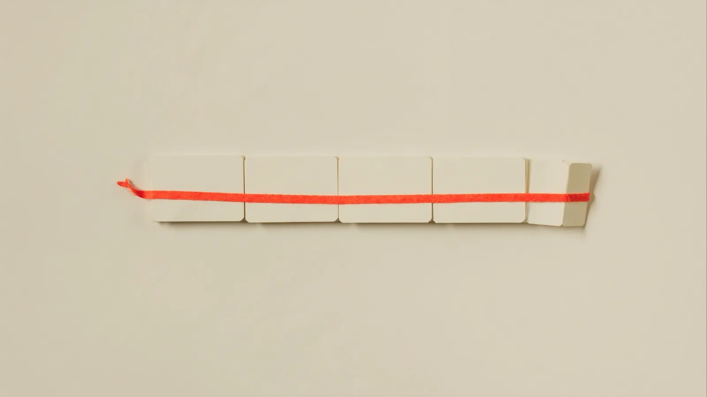

Je structure la roadmap, j'anime le delivery et je fais avancer les équipes. De la migration SAP S/4HANA au lancement de jeux pour des loteries internationales, 25 ans de projets, en français et en anglais.
Portefeuille projets, roadmap, comités de pilotage, reporting COMEX, risques et budget.
Backlog, priorisation, dailies, suivi de plusieurs streams en parallèle, Jira Cloud.
Migrations SAP ECC6 → S/4HANA, SIRH (Talentsoft, Cornerstone), no-code, gouvernance data.
Organisation du delivery avec Claude, GitHub connecté, mises en production documentées.
Déploiement de jeux pour des loteries internationales. Une roadmap d'une quarantaine de jeux, deux streams de delivery menés en parallèle, une équipe d'une vingtaine de personnes.
2020 — 2024 : missions menées comme responsable de mission chez Zelig Consultants · freelance depuis février 2024
J'utilise Claude au quotidien pour organiser le delivery de mes clients : préparer, documenter, vérifier. Chaque mise en production suit un process écrit, relu et rejouable.

Lean Six Sigma Green Belt (éligible Black Belt). Agile, cycle en V ou hybride : la méthode s'adapte au projet, pas l'inverse. Je pars quand l'équipe sait faire sans moi.
15 ans dans l'océan Indien, à la Réunion, à Mayotte et à Madagascar : télécoms, direction d'une agence web, équipes de développeurs à Madagascar et en Inde.
Aujourd'hui basé entre Compiègne et Paris. Missions en français et en anglais.
3 mois et plus, sur site ou hybride. Gouvernance, roadmap, delivery.
État des lieux du portefeuille, roadmap priorisée, gouvernance et rituels prêts à lancer.
Jira, GitHub connecté, runbook de mise en production sur VPS, rituels outillés par l'IA. Durée selon le périmètre.
Devis sous 48 h · facturation ZENOCODERS · déplacements hors Île-de-France en sus